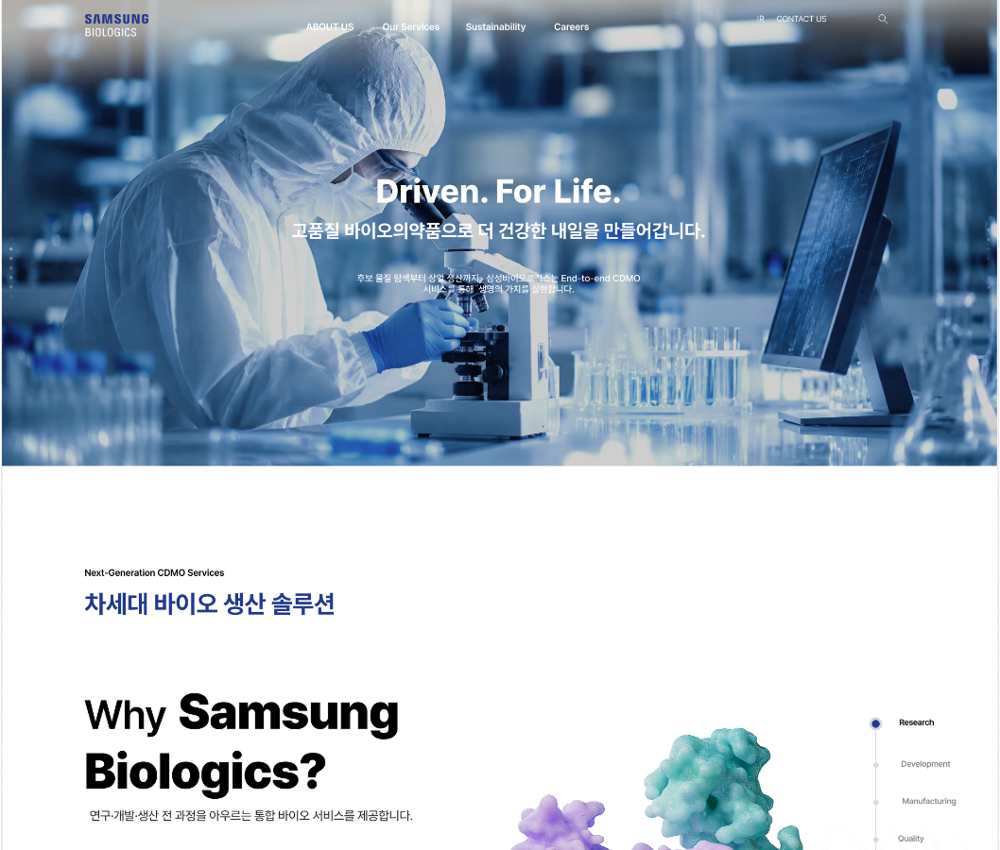
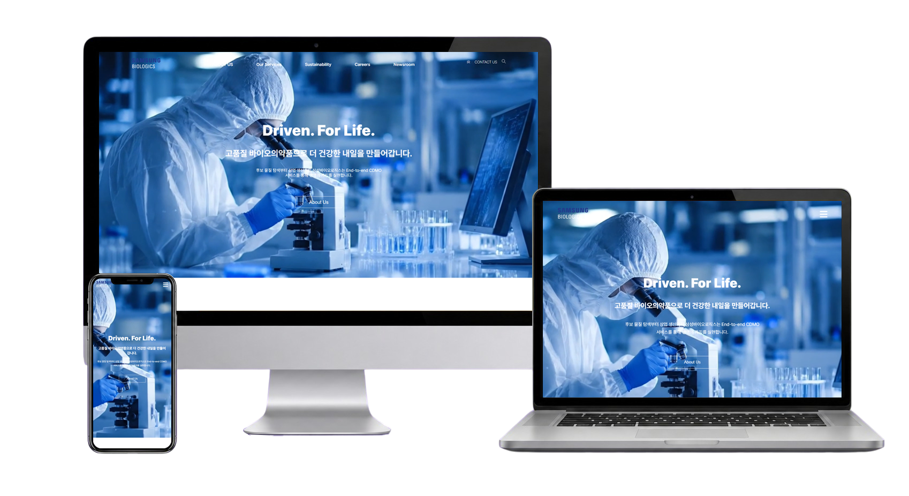
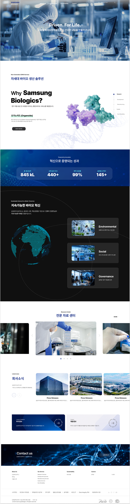

CLEAR
STRUCTURE
복잡한 기업 정보를 정리해 핵심 내용을 명확하게 전달
PREMIUM DESSERT BRAND REDESIGN
한스케익의 브랜드 감성과 제품 탐색 흐름을 동시에 정돈한 반응형 웹사이트 UX/UI 리디자인 프로젝트입니다.
EXPLORE CASE↘
전문성과 기술력을 직관적으로 전달하고,글로벌 바이오 기업의 신뢰를 경험할 수 있도록 구성했습니다.
기존 사이트의 기업 정보와 주요 서비스 구조를 분석하고, 사용자가 필요한 정보를 빠르게 파악할 수 있도록 콘텐츠의 우선순위를 재정리했습니다. 생산 역량과 기술 경쟁력을 중심으로 주요 정보를 명확하게 전달하도록 구성했습니다.
블루와 화이트를 중심으로 정제된 비주얼 시스템을 적용해 전문적이고 신뢰감 있는 이미지를 표현했습니다. 대형 이미지와 수치 정보, 스크롤 인터랙션을 활용해 글로벌 바이오 기업의 규모감과 미래지향적인 분위기를 강조했습니다.
복잡한 기업 정보를 정리해 핵심 내용을 명확하게 전달
정제된 블루 비주얼로 전문성과
신뢰감 강조
수치와 인터랙션을 활용해 글로벌 기업의 규모감 표현
국내 바이오 CDMO 기업의 웹사이트를 비교해 사업 역량과 생산 인프라를 제시하는 방식을 살펴봤습니다. 서비스 분류와 기술 정보의 전달 방식을 분석하고, 삼성바이오로직스의 핵심 경쟁력을 선명하게 드러낼 수 있는 방향을 설정했습니다.
개발·생산·분석 서비스를 명확히 구분
생산시설과 규모를 구체적인 수치로 제시
ADC 등 주요 사업 영역을 전면에 노출
사업 분야별 전문 역량이 뚜렷함
개발부터 상업 생산까지 범위를 제시
기술 자료와 인사이트 콘텐츠가 풍부함
기업 메시지와 서비스 설명이 반복됨
세부 역량이 여러 페이지에 분산됨
서비스 간 차이를 빠르게 비교하기 어려움
세부 메뉴의 단계와 항목이 많음
전문 용어가 많아 진입 장벽이 높음
전체 사업 범위를 한눈에 보기 어려움
개발부터 생산·품질까지 사업 역량을 체계적으로 제시
생산 규모와 주요 성과를 객관적인 수치로 증명
국내외 생산 거점과 파트너십 범위를 시각화
개발·생산·품질 정보가 메뉴별로 나뉘어 전체 사업 범위를 파악하는 데 시간이 필요함
바이오의약품의 전 과정을 하나의 체계로 묶어 서비스 간 관계와 사업 범위를 한눈에 제시
생산 역량과 기술 성과가 긴 설명문에 묻혀 기업의 경쟁력이 즉각적으로 드러나지 않음
핵심 수치와 카운트업 모션을 활용해 규모와 성과를 객관적인 데이터로 증명
환경·사회·거버넌스 정보가 개별적으로 나열되어 지속가능경영의 방향성을 연속적으로 이해하기 어려움
지구본과 E·S·G 카드를 연계한 스크롤 연출로 지속가능경영의 핵심 과제를 단계적으로 전달
정밀한 바이오 기술과 대규모 생산 인프라를 현대적인 시각 언어로 재해석했습니다. 블랙 기반의 화면에 선명한 블루와 대형 타이포그래피를 적용하고, 영상·수치·스크롤 모션을 통해 기술 경쟁력과 지속가능한 비전을 역동적으로 전개했습니다.
정제된 화면으로 신뢰감 강조
수치와 시설 이미지로 생산 규모 표현
영상과 모션으로 기술력 전달
지구본과 ESG 카드로 지속가능성 표현
공통 무채색 토큰은 그대로 두고 프로젝트별로--accent,--accent-soft,--accent-dark만 교체합니다.
ABCDEFGHIJKLMNOPQRSTUVWXYZ
0123456789
가나다라마바사아자차카타파하
데스크톱의 비대칭 레이아웃은 태블릿과 모바일에서 콘텐츠 우선순위에 맞춰 단순한 세로 구조로 변환됩니다.

